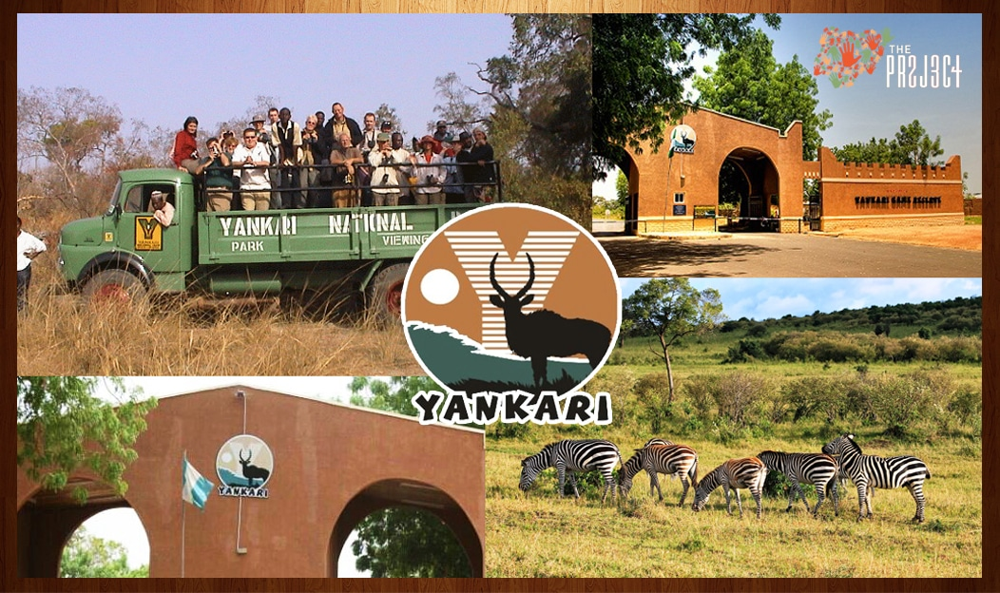

Nigeria boasts a variety of attractions, from natural wonders to cultural sites. Here are the top 5 tourist spots in Nigeria.
-
Yankari National Park:

A premier wildlife haven with diverse flora and fauna, including elephants, baboons, and various bird species. The park also features the Wikki Warm Spring, a popular spot for relaxation and recreation. -
Olumo Rock:

A historical and cultural landmark in Abeokuta, offering panoramic views of the city and surrounding landscape. -
Lekki Conservation Centre:

A nature reserve in Lagos, known for its canopy walkway, diverse wildlife, and peaceful environment. -
Osun-Osogbo Sacred Grove:

A UNESCO World Heritage site, this lush forest is dedicated to the Yoruba goddess of fertility, Osun, and features shrines, sculptures, and sacred spaces. -
Zuma Rock:

A massive monolith near Abuja, often referred to as the "Gateway to Abuja," offering stunning views and a sense of awe.